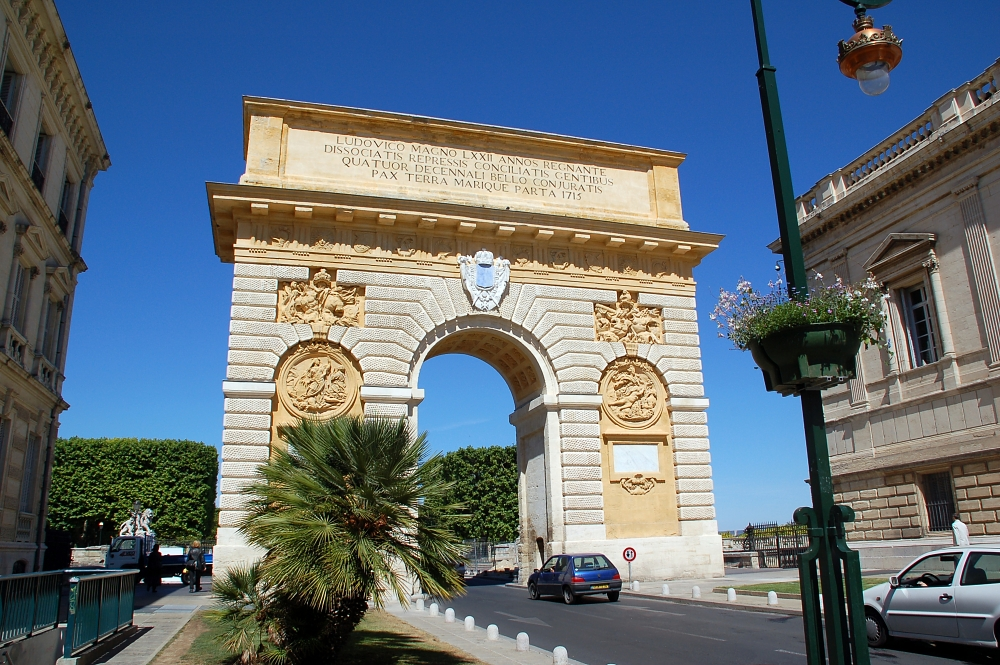
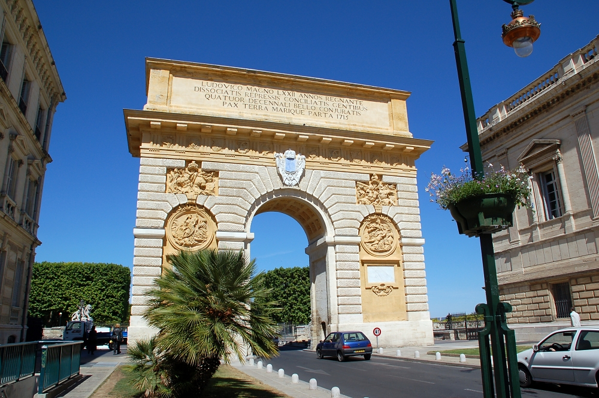

OWL: Experiences and Directions 2013
10th OWL: Experiences and Directions Workshop (OWLED 2013)
Montpellier, France, 26th-27th May, 2012
 [CC-BY-SA-2.5 (http://creativecommons.org/licenses/by-sa/2.5\
) or CC-BY-SA-2.5 (http://creativecommons.org/licenses/by-sa/2.5)], via Wikimedia Commons")
 [GFDL (http://www.gnu.org/copyleft/fdl.html), CC-BY-SA-3.0 (http://creativecommons.org/licenses/by-sa/3.0/) or CC-BY-2.5 (http://creativecommons.org/licenses/by/2.5)], via Wikimedia Commons") 

 [CC-BY-SA-2.5 (http://creativecommons.org/licenses/by-sa/2.5) or CC-BY-SA-2.5 (http://creativecommons.org/licenses/by-sa/2.5)], via Wikimedia Commons")
[ Home | Dates | Submissions | Venue | Registration | Program | Organization ] |
| Sunday 26th May | ||||
|---|---|---|---|---|
| Time | Description | Paper | Title | Authors |
| 9:00:00 | Introduction | |||
| 9:15:00 | Invited speaker | TBA | Michel Dumontier | |
| 10:15:00 | Short talk | 1 (PDF) | Suite of Tools for Pattern-Based Transformation of OWL Ontologies | Ondrej Zamazal, Marek Dudas, Jan Cerny and Vojtěch Svátek |
| 10:30:00 | Break | |||
| 11:00:00 | Talk | 2 (PDF) | Owl2vcs: Tools for Distributed Ontology Development | Ivan Zaikin and Anatoly Tuzovsky |
| 11:25:00 | Talk | 3 (PDF) | Experiences from a TBox Reasoning Application: Deriving a Relational Model by OWL Schema Analysis | Thomas Hornung and Wolfgang May |
| 11:50:00 | Talk | 4 (PDF) | Improving Industrial Collaboration with Linked Data and OWL | Jan Hladik, Conny Christl, Frank Haferkorn and Markus Graube |
| 12:15:00 | Short talk | 5 (PDF) | Putting OWL into production at the European Bioinformatics Institute | James Malone, Tony Burdett, Jon Ison, Simon Jupp, Drashtti Vasant, Danielle Welter and Helen Parkinson |
| 12:30:00 | Break | |||
| 14:00:00 | Talk | 6 (PDF) | Metamodeling-Based Coherence Checking of OWL Vocabulary Background Models | Vojtěch Svátek, Martin Homola, Jan Kluka and Miroslav Vacura |
| 14:25:00 | Talk | 7 (PDF) | Tradeoffs in Measuring Entity Similarity for Pattern Detection in OWL Ontologies | Eleni Mikroyannidi, Robert Stevens and Luigi Iannone |
| 14:50:00 | Talk | 8 (PDF) | Learning Formal Definitions for Biomedical Concepts |
George Tsatsaronis, Alina Petrova, Maria Kissa, Yue Ma, Felix Distel, Franz Baader and Michael Schroeder |
| 15:15:00 | Short talk | 9 (PDF) | Brain, a library for the OWL2 EL profile | Samuel Croset, John Overington and Dietrich Rebholz-Schuhmann |
| 15:30:00 | Break | |||
| 16:00:00 | Talk | 10 (PDF) | Modeling issues and choices in the Data Mining OPtimization Ontology | C. Maria Keet, Agnieszka Lawrynowicz, Claudia D'Amato and Melanie Hilario |
| 16:25:00 | Talk | 11 (PDF) | OWL 2 Reasoning To Detect Energy-Efficient Software Variants From Context | Sebastian Goetz, Julian Mendez, Veronika Thost and Anni-Yasmin Turhan |
| 16:50:00 | Short talk | 12 (PDF) | Binary OWL | Matthew Horridge, Timothy Redmond, Tania Tudorache and Mark Musen |
| 17:05:00 | Short talk | 13 (PDF) | Instrumenting Atomic Decomposition: software APIs for OWL | Dmitry Tsarkov, Chiara Del Vescovo and Ignazio Palmisano |
| 17:20:00 | ||||
| Monday 27th May | ||||
| 9:00:00 | Talk | 14 (PDF) | Modeling in OWL 2 without Restrictions | Michael Schneider, Sebastian Rudolph and Geoff Sutcliffe |
| 9:25:00 | Talk | 15 (PDF) | Representing Kinship Relations on the Semantic Web | Cristiano Longo, Aldo Gangemi and Domenico Cantone |
| 9:50:00 | Talk | 16 (PDF) | The Semantic Web takes Wing: Programming Ontologies with Tawny-OWL | Phillip Lord |
| 9:15:00 | Short talk | 17 (PDF) | Mastro Studio: a system for Ontology-Based Data Management | Domenico Lembo, Valerio Santarelli, Domenico Fabio Savo, Cristina Civili, Marco Console, Lorenzo Lepore, Riccardo Mancini, Antonella Poggi and Marco Ruzzi |
| 10:30:00 | Break | |||
| 11:00:00 | Talk | 18 (PDF) | ontop at work | Mariano Rodriguez-Muro, Roman Kontchakov and Michael Zakharyaschev |
| 11:25:00 | Talk | 19 (PDF) | Towards Query Formulation and Query-Driven Ontology Extensions in OBDA Systems | Bernardo Cuenca Grau, Martin Giese, Ian Horrocks, Thomas Hubauer, Ernesto Jimenez-Ruiz, Evgeny Kharlamov, Michael Schmidt, Ahmet Soylu and Dmitriy Zheleznyakov |
| 11:50:00 | Short talk | 20 (PDF) | The Optique Project: Towards OBDA Systems for Industry | Diego Calvanese, Martin Giese, Peter Haase, Ian Horrocks, Thomas Hubauer, Yannis Ioannidis, Ernesto Jimenez-Ruiz, Evgeny Kharlamov, Herald Kllapi, Manolis Koubarakis, Steffen Lampater, Ralf Moeller, Christian Neuenstadt, Oezguer Oezcep, Mariano Rodriguez-Muro, Mikhail Roshchin, Marco Ruzzi, Domenico Fabio Savo, Michael Schmidt, Ahmet Soylu, Arild Waaler and Dmitriy Zheleznyakov |
| 12:05:00 | Short talk | 21 (PDF) | On Rewriting and Answering Queries in OBDA Systems for Big Data | Diego Calvanese, Ian Horrocks, Ernesto Jimenez-Ruiz, Evgeny Kharlamov, Michael Meier, Mariano Rodriguez-Muro and Dmitriy Zheleznyakov |
| 12:20:00 | Short talk | 22 (PDF) | Distributed Query Processing on the Cloud: the Optique Point of View | Herald Kllapi, Dimitris Bilidas, Ian Horrocks, Yannis Ioannidis, Ernesto Jimenez-Ruiz, Evgeny Kharlamov, Manolis Koubarakis and Dmitriy Zheleznyakov |
| 12:35:00 | Break | |||
| 14:00:00 | Panel | Big data panel | Michel Dumontier, John Goodwin, Axel Polleres | |
| 15:30:00 | Break | |||
| 16:00:00 | townhall | Steering commitee meeting | ||
| 16:30:00 | OWLED close | |||